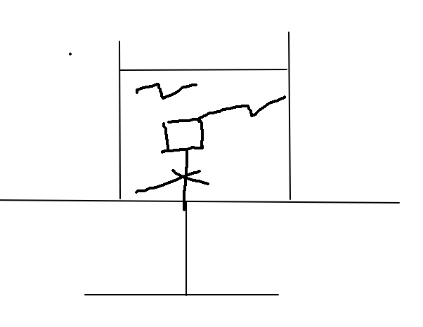
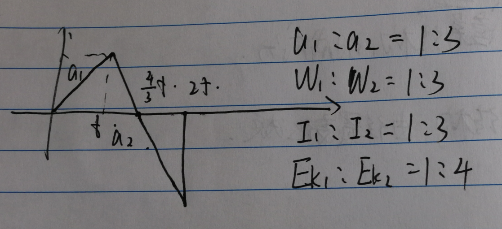
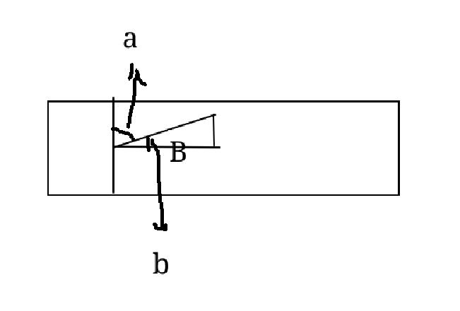
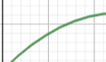
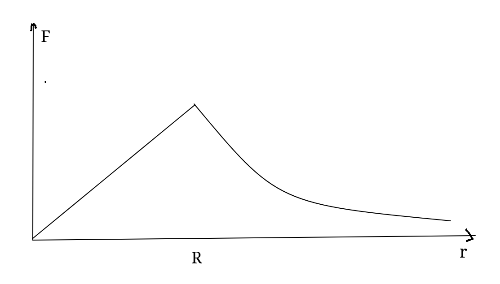

物理知识点汇总
物理知识点汇总
电磁场
电场强度包括方向，说电场强度相同时注意方向的影响。
磁感线不能相交。
给导线两段加上电压，在磁场中运动，比较不同形状的导线所受的安培力时，注意导线有电阻。
运动
当物体的一个匀加速运动知道位移求时间，不好直接解出时，可以考虑解出初始速度、终止速度和加速度，以求时间。
平抛运动速度的反向延长线过原高度下路程的中点。
先后开始的加速度相同的匀加速运动， 不变， 正比于 .
万有引力
开普勒第一定律？ 每一个行星都沿各自的椭圆轨道环绕太阳，而太阳则处在椭圆的一个焦点中。 也称为椭圆定律、轨道定律。
开普勒第二定律？ 也称为等面积定律，相等时间内，太阳和运动的行星扫过的面积相等。
开普勒第三定律？ 也称为周期定律。 公转周期的平方与椭圆半长轴的立方成正比。 ，其中 为周期， 为半长轴， 为常数，对所有行星相同。 实际上，
高轨低速长周期。
卡文迪许用扭秤测出了引力常量 ，被称为第一个“称”出地球质量的人。
牛顿通过月地检验，验证了万有引力定律的正确性。
交流电
正弦交流电有效电压、有效电流都是峰值除以 .
可以用积分推导证明。
中性面是垂直于磁感线的面。在中性面上，磁通量最大，感应电流为零。
如果交流电发电机不绕中轴旋转，两侧导线发电量不同，但发电量和一定，且依然等于 .
交流电远距离输电，功率损失 ，电压损失 .
确定交变电流有效值的依据是：电流的热效应。
电感感抗：，其中 为交流电频率， 为自感系数。
电容容抗：，其中 为交流电频率， 为电容。
机械振动
单摆圆频率 ，周期 .
简谐运动中，如果起始位置是最大位移位置或平衡位置，那么非整周期运动也能直接计算，否则必须考虑初相位。
光学
无影灯利用光的直线传播原理。
刮胡刀刀片影子边缘模糊不清是因为光的衍射现象。
光导纤维内芯材料折射率比外套材料大。
折射率：红光到紫光依次增大。
波速与折射率成反比。
折射率等于光在真空中的速度与光在介质中的速度之比。
波长与折射率成反比。
光的色散原理：同种介质，频率越大的可见光，传播速度越慢，折射率越大。
双缝干涉实验中，相邻亮条纹中心间距
光在介质中传播的速度：
日光灯的光为非相干光，不发生干涉。
通过小缝隙看日光灯，可见到彩色条纹，为光的衍射现象。
原子物理
光子具有能量，，其中 为普朗克常量， 为光的频率。
光电效应中，从极板中射出的粒子动能 ，其中 为逸出功，一般由材料决定。
光电效应中金属的极限频率：恰使电子飞出的频率，，仅与逸出功有关。
电子从高能级跃迁到低能级放出光子，从低能级跃迁到高能级吸收光子。
电子可以一次跃迁多层，结果与分别跃迁单层不同。
粒子由两个质子和两个中子组成。
原子核发生 衰变后，释放 粒子，新的原子核质子数减小二。
衰变中，一个中子转化为质子和电子。衰变过程中，动量守恒，质量数守恒。
射线与 射线带电， 射线不带电。
射线穿透性弱。
物体热辐射只与温度有关吗？
错误，还与物体本身有关。
黑体一定是黑的吗？
错误。
物体热辐射中，温度升高，各种波长辐射强度都升高，最大值点向短波移动。
物质结构
-
固体
-
晶体，有固定熔点。
-
单晶体，各向异性，有规则形状。
-
多晶体，各向同性，无规则形状。
-
-
非晶体，无固定熔点，各向同性。
-
同种元素构成的固体，可能会由于原子排列方式不同而成为不同晶体吗？
正确，例如碳元素。
合适条件下，某些晶体可转化为非晶体，某些非晶体可转化为晶体吗？ 正确。
其他
螺旋测微仪一大格 ，一小格 ，要估读。
研究小车匀变速直线运动规律时：
-
细线必须与长木板平行。
-
小车与钩码质量无限制。
-
摩擦力不需要平衡。
量程应该写 0-5V 而非 5V.
判断：使用多用电表测电压时，先用中等量程试测。
错误，用最大量程试测。
金属热电阻的阻值随温度升高而增大。
判断：可以从单一热源吸收热量，使之完全变成功。 正确，但会产生其他影响。
理想气体气体内能公式：
环绕某天体的周期的公式？（已知环绕半径 ）
卫星从高轨道到低轨道能量变化？ 减小。 考虑从某轨道减速，而后轨道半径变小。
双星系统，旋转中心离较重的星近。
利用电子显微镜观测物质微观结构说明电子可以产生[1]衍射现象，体现了[1]波动性。
判断：做布朗运动的微粒，只能用显微镜观察。 正确。
判断：平抛运动是匀变速运动。 正确。
卫星轨道半径为 ，已知 求天体质量 的公式？
近地卫星测量天体密度，已知周期 ，密度公式？
高空卫星测量天体密度，已知天体半径 ，轨道半径 ，环绕周期 ，密度公式？
人造地球卫星，用轨道半径 与天体质量 表示线速度？
人造地球卫星，用 表示角速度 ？
越靠近南北两极， 值如何变化？ 越大。
倾角为 的斜面上，一物体以 的水平初速度扔出，再次落在斜面上，已知 ，表示
轻绳圆周运动模型中，过最高点的速度条件是？
圆周运动模型中，恰好能通过最高点，也就是 的物体，在最低点的速度？
摩擦力产热与摩擦力做功区别？ 摩擦力做功，用 计算，一般来说选取地面为参考系。 而摩擦力产热，总是用相对位移计算。
在斜面上物块只受摩擦力、重力，其加速度？
匀速直线运动，某段时间平均速度计算方法？
对于逐差法求解纸带问题，
利用逐差法求解加速度，若偶数段则两两做减法，若为奇数段，则如何操作？ 舍弃中间段，而后两两做减法。 例如有 段，则用 ，而舍弃
判断加速度相等时需要注意什么？ 加速度有方向。
验证力的平行四边形定则实验中，画出的合力不完全竖直的可能原因？ 定滑轮有摩擦、木板未竖直放置等。
第一宇宙速度、第二宇宙速度、第三宇宙速度分别是什么？ 第一宇宙速度：最大环绕速度， 第二宇宙速度：脱离速度，逃离地球， 第三宇宙速度：逃逸速度，逃离太阳系， 一般，第二宇宙速度是第一宇宙速度的 倍。
飞机飞行时，受到竖直向下的磁场，比较此时左方翼尖和右方翼尖的电势。 左方电势更高。考虑正电荷向左运动。
判断：家用电烤箱是涡流现象的运用。 错误，微波炉。
判断：金属探测仪是涡流现象的运用。 正确。
一条杆在运动时，杆上所有点沿杆方向的速度相等，垂直于杆的速度与离中心距离成正比。
电容器电容公式？
判断：电容器固定 时，移动上下两极板， 不变。 正确。 证明：
电容器固定 时，移动极板，判断电势？ 距离零势能极板远近决定电势。
康普顿效应体现了光的粒子性。
螺旋测微仪精度？ 估读后达到千分之一毫米，也称为千分仪。
判断： 代表一个原子。 错误，代表原子核而非原子。
判断：半衰期是元素质量减半所需要的时间。 正确。
放出 粒子与产生的新核在磁场中偏转，哪个半径大？如何判断？ 粒子半径大。 利用动量守恒，设动量为 ， 与电荷数成反比。
电容器耐压值对应电压的最大值。
第二类永动机不违反能量守恒定律，但违反了[1]热力学第二定律。
烧热的针尖接触涂有蜂蜡薄层的云母片背面，融化的蜂蜡呈椭圆形，说明云母片是晶体。
匀速圆周运动是匀速运动吗？ 不是。
判断：能级跃迁时，用电子照射的能量可以被部分吸收。 正确。
判断：能级跃迁时，光子能量足够大可直接使其电离。 正确。
杂
平抛运动位移角？
判断：加速度改变的运动均为变加速运动。 正确。
判断：同步卫星只能在赤道上，静止于一点上空。 正确。
是几位有效数字？ 一位。
是几位有效数字？ 4 位。
判断：卫星绕天体以不同椭圆轨道经过同一点时，向心加速度不同。 错误，向心加速度相同。都只由万有引力提供。
检验斜槽末端水平的方法？ 将小球置于槽口任意位置，小球均不发生滚动。
判断：探究平抛运动特点，坐标原点是槽口端点。 错误，是小球出槽口时圆心在木板上的投影点。
竖直线用铅垂线这一器材确定。
平抛运动已知 与 ，求 ？
小船过河问题， 时，最短路程过河距离是？ 时呢？
! !天平上放置水杯，水杯底部细绳连接物体，剪断细绳后物体上浮，天平示数如何变化？ 减小。 考虑物体有向上加速度 ，同体积的水获得向下加速度 浮力为物体提供向上加速度，浮力的反作用力为水提供向下加速度。 但由于 ，浮力的反作用力提供加速度不足，则天平减小支持力以提供向下加速度。
物体前 秒有 的加速度，后 秒有 的加速度，最终回到原点，求 ，考虑 ，其中 相等。 ，考虑 ，其中 相等。 ，考虑 可用图像法求解。 在 时速度为 
安培力公式中， 中的 是什么？ 与 的线线角。下图中的 a. 
判断：两个电荷距离趋于无穷小时，其静电力趋于无穷大。 错误。 距离无穷小时，电荷不能视作点电荷，静电力不能认为趋于无穷大
判断：沿场强的方向，电势降落最快。 正确。
静电计测量电量还是电压？ 电压。电压越大，偏角越大。
限流与分压，考虑精确度，优先选择？ 分压。
判断：磁通量变化率较大时，感应电动势 也一定较大。 错误，，还有 线圈匝数的影响。
磁场方向是小磁针静止时 N 极所指向的方向。
磁感应强度叠加注意事项？ 矢量叠加。
判断：线圈通电后，在匀强磁场中受到的安培力的矢量和为零。 正确。
判断：洛仑兹力一定不做功。 正确。
判断：运动电荷在磁场中一定受洛仑兹力作用。 错误，可以速度方向与磁场方向平行。
两个电流相互作用力？ 同吸异斥。
速度选择器的速度是？
理想变压器的原理：互感现象。
交变电流图像中，计算有效值的技巧方法？ 平方加权平均。 在一个周期内， 电压同理。
油膜法估测分子直径公式？
分子直径数量级？
分子质量数量级？ kg
判断：分子力是指引力和斥力的合力。 正确。
分子力平衡距离 数量级？
什么时候分子力可以忽略？
物体的内能决定因素？ 温度、体积、物质的量、物态。
判断：晶体、非晶体一定都是固体。 正确。固体分为晶体与非晶体。
第一类永动机是？ 不断对外做功的无限能源，违背能量守恒定律。
第二类永动机是？ 反复完全利用回收能量，违背热力学第二定律。
光子动量公式？
不确定性关系？
氢原子光谱的巴耳末公式？
氢原子轨道量子化公式？
氢原子能量量子化公式？
光照强度不变，光照频率增大，饱和光电流如何改变？ 减小。 光照强度不变，单个光子能量增大，则光子数变少，激励出的光电子变少，光电流减小。
传送带模型，摩擦热消耗能量与给物体提供动能关系？ 相等。 物体获得 的动能，额外消耗 动能。
伏安法如何判定是大电阻还是小电阻？ 比较 与
如果不知道是大电阻还是小电阻，伏安法如何操作？ 进行试触。 若电压表变化大，则让电压表测准，用外接法。 若电流表变化大，让电流表测准，用内接法。
探究小灯泡伏安特性曲线，要用分压法。
测电源内阻，内接法，电源直接接电压表， 与真实值比较？ 用等效电源法研究。
测电源内阻，外接法，电源直接接电流表， 与真实值比较？
匀加速直线运动中，中点位移速度公式？ 用 进行推导。
判断：匀加速直线运动中，中点位移速度总是大于等于中间时刻速度。 正确。 平方平均大于几何平均。
静止状态可以有加速度吗？ 不能。
在图像题中，位移时间图是一个类似抛物线的曲线，可以判定物体做匀减速直线运动吗？ 不行，类似抛物线，无法确定是抛物线。
研究匀变速直线运动需要平衡摩擦力吗？ 不需要，只要保证加速度不变即可。
电磁打点计时器工作电源？ 6V 以下交流电。
对于 ，逐差法的分母如何确定？ 先考虑间隔，再考虑有多少个值平均。
判断：在 确定后，摩擦力与支持力所成角确定。 正确，即为摩擦角。
判断：一个物体是施力物体的同时，必然是受力物体。 正确。
月球上天平、杆秤能正常使用吗？ 可以，测的是相对质量，用砝码比较，与 无关。
晾衣杆模型，上下移动一侧悬点，角度如何变化？绳子拉力如何变化？ 都不变。 由于物体悬挂点水平合力为零，且两侧弹力相等，故两侧角度相等。 由几何关系可以得到 ，其中 为两杆距离， 为绳长。 因此角度不变，弹力合力与重力平衡，故拉力不变。
晾衣杆模型 角如何计算？ 将一侧绳子水平方向镜面对称，构造出共线的斜边，而后直接由定义计算。
判断：轻质弹簧两端受力一定相等。 正确，否则合外力不为零，加速度无穷大。
判断：轻质弹簧确定一侧受力，就能计算出 正确，两侧受力一定相等。
弹簧串联劲度系数？
判断：重心可以在物体外。 正确。
瓶子向右加速，瓶中有水，水中有气泡，气泡如何运动？ 向右运动。 水的惯性大，气泡惯性小，相对水而言，气泡向右运动。 可以考虑气泡受水的力被挤到前面。
判断：作用力与反作用力一定在不同物体上。 正确。
判断：二力平衡一定在同一物体上。 正确。
判断：对于每一个力而言，必有一大小相等方向相反的反作用力存在。 正确。
万有引力
判断：开普勒三大定律对环绕其他天体的物体也适用。 正确。
在近日点速度为 ，半径为 ，远日点为 ，有什么关系？ ，用微元法证明。 由开普勒第三定律推导，只有近日点远日点满足，其余位置速度不相切。 普适规律：取相切方向的速度分量即可对任意位置满足。
开普勒第三定律
近地卫星的周期大约是多少分钟？ 分钟
地球质量大概是？
万有引力估算时， 与 关系？ 取 即可。
万有引力常量
判断：均匀球壳的空腔内任意处，质点受到球壳的万有引力合力为零。 正确。
物体在均匀球体内部，计算球体对其万有引力 外壳合力为零，只需计算内部球体，用体积公式化简可得。
赤道上不受重力，是什么情况？ 万有引力提供向心力。
第一宇宙速度的公式？
地球绕太阳公转线速度？
判断：近地卫星周期只与天体密度有关。 正确。
卫星周期用 表示？
地球同步卫星环绕半径估算？
高轨低速长周期，大机大势小动能。
天体再次同侧共线时，
天体相距最远时，
双星系统，已知两星距离 ，周期 ，求双星质量和。
双星系统，已知 与双星距 ，求
判断：多星系统，轨道圆心与质心重合。 正确。
关于某天体，物体受万有引力的图像？ 在天体内部， 正比例增长。 在天体外部， 衰减。
圆周运动
圆锥摆加速度？
圆锥摆圆周运动角速度？
圆锥摆周期公式？
圆锥摆最小角速度？
圆锥摆角大速大周期[1]小。
圆盘转动模型，可以使用质心法来判断整体运动趋势。
半径为 的圆周运动，向心力 时，
轨道圆周运动最高点速度为 ，最低点速度为 ，若 ，则
轨道圆周运动最高点绳子拉力为 ，最低点拉力为 ，有
链接到此文档的相关文档
📙